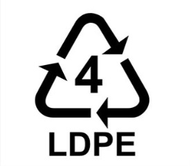

Développement durable

Problématique
Nous allons évaluer les impacts environnementaux et la consommation de ressources, sur tout le cycle de vie, de l'utilisation, une fois par jour, d'une cafetière pour le petit déjeuner de 4 personnes.
La cafetière, comme ci-contre, a une durée de vie de 5 ans, et est fabriquée en Chine.
L'étude ne prend en compte ni le café ni le filtre à café. La consommation énergétique sur cinq ans est estimée à 175 kWh.
Étude ACV avec Bilan Produit ® de l'utilisation de la cafetière
Installez le logiciel Bilan Produit ®.
Méthodologie
- Projet: Café du petit déjeuner de 4 personnes.
- Cas: Cafetière fabriquer en Chine.
- Date: Précisez la date du jour.
- Auteur: Renseignez votre Nom et prénom.
Coefficient d'unité fonctionnelle
- En considérant une année bissextile parmi les 5 ans de vie de la cafetière, le CUF est: 1/1826 ≅ 0,00055.
- Description: Consommation de café pour 4 pers. (votre Nom et prénom).
Phase de production (ou fabrication)
| Sous-ensemble | Nom | Quantité |
| Cable | PVC | 0,105 kg |
| Cable | Cuivre courant | 0,06 kg |
| Cable | Camion moyen (>16T)(moyenne européenne) | 0,0165 t.km Masse transportée: 0,3 kg Distance: 55 km |
| Corps | Aluminium mix européen | 0,1 kg |
| Corps | PP | 0,8 kg |
| Corps | Injection | 0,8 kg |
| Emballage | Boîte en carton ondulé | 0,1 kg |
| Petites pièces | PVC | 0,02 kg |
| Petites pièces | PP | 0,04 kg |
| Petites pièces | Injection | 0,02 kg |
| Petites pièces | PEHD | 0,14 kg |
| Petites pièces | Cuivre courant | 0,02 kg |
| Petites pièces | Acier inox 18/8 | 0,15 kg |
| Pot à café | PP | 0,2 kg |
| Pot à café | Injection | 0,2 kg |
| Pot à café | Verre emballage blanc | 0,4 kg |
| Pot à café | Électricité moyenne tension France | 1,1 kWh |
Phase de transports
| Sous-ensemble | Nom | Quantité |
| Usine vers port de Shanghai | Camion moyen (16 à 32 T) Euro4 | 1,065 t.km Masse transportée: 2,13 kg Distance: 500 km |
| Port de Shanghai vers le Havre | Transport transocéanique | 22,0455 t.km Masse transportée: 2,13 kg Distance: 10350 km |
| Le Havre vers entrepôt de stockage | Petit camion 3.5 à 16 T (moyenne européenne) | 0,639 t.km Masse transportée: 2,13 kg Distance: 300 km |
| Entrepôt de stockage vers magasin | Petit camion 3.5 à 16 T (moyenne européenne) | 0,1065 t.km Masse transportée: 2,13 kg Distance: 50 km |
| Magasin vers domicile | Voiture essence (moyenne européenne) | 10 pkm Moyenne européenne de passager: 1,6/véhicule Distance: 6,25 km |
Phase d'utilisation
| Sous-ensemble | Nom | Quantité |
| Petit déjeuner | Electricité basse tension France | 175/1826 ≅ 0,096 kWh |
Fin de vie
En fin de vie la cafetière va aux "Déchets ménagers".
Enregistrez le classeur avec le nom "cafe_petit_dejeuner".
Interprétation des résultats
Résultats des impacts par phase de vie
Faites un copier/coller du graphique dans Paint et sauvegardez-le dans un fichier.
Quelle est la phase, sur tout le cycle de vie, qui a le plus d'impacts sur l'environnement et la consommation de ressources:
Donnez le plus mauvais effet, de l'utilisation de la cafetière au petit déjeuner, sur tout le cycle de vie, et expliquez quelles en sont les conséquences sur l'environnement:
Résultats pour la phase de production
Faites un copier/coller du graphique dans Paint et sauvegardez-le dans un fichier.
Quels sont les deux matériaux, et leur sous-ensemble d'appartenance, qui ont le plus d'impacts:
Donnez le plus mauvais effet de la production de la cafetière, et expliquez quelles en sont les conséquences sur l'environnement:
Résultats pour la phase de transports
Faites un copier/coller du graphique dans Paint et sauvegardez-le dans un fichier.
Quelle est l'étape du transport qui a le plus d'impacts:
Allez dans l'onglet "Résultats", en bas de la feuille de calcul, et complétez le tableau ci-dessous avec les valeurs, en grammes, de rejet de CO2 des différentes étapes du transport:
| Étape | Rejet de CO2 (en grammes) |
| Usine vers port de Shanghai | |
| Port de Shanghai vers le Havre | |
| Le Havre vers entrepôt de stockage | |
| Entrepôt de stockage vers magasin | |
| Magasin vers domicile |
Chaque valeur de rejet de CO2, calculée précédemment, correspond à 1/1826 (voir calcul du CUF) du total du rejet de l'étape en question. Calculez le rejet total de CO2, en grammes, de l'étape "Magasin vers domicile": .
L'étiquette énergie/CO2, apposée sur les véhicules depuis 2006, permet à tout acheteur potentiel d'une automobile d'être renseigné de manière lisible et comparative sur les émissions de dioxyde de carbone.
Le rejet total de CO2 pour l'étape "Magasin vers domicile", calculée précédemment, correspond à 10 pkm (voir la phase de transports dans la partie Étude ACV). Calculez le rejet total de CO2, de l'étape "Magasin vers domicile", pour 1 pkm, et déduisez-en la classe, entre A et G, d'émissions de CO2 du véhicule utilisé:
Résultats pour la phase d'utilisation
Faites un copier/coller du graphique dans Paint et sauvegardez-le dans un fichier.
Donnez le plus mauvais effet de l'utilisation de la cafetière au petit déjeuner, et expliquez quelles en sont les conséquences sur l'environnement:
Résultats pour la fin de vie (ou recyclage)
Faites un copier/coller du graphique dans Paint et sauvegardez-le dans un fichier.
Quels sont les deux matériaux, et leur sous-ensemble d'appartenance, qui réduisent le plus les impacts en étant recyclés:
| Symbole |  | ||||||
| Nom | Polytéréphtalate d'éthylène | Polyéthylène haute densité | Polychlorure de vinyle | Polyéthylène basse densité | Polypropylène | Polystyrène | Autres plastiques |
| Exemples | |||||||
| Recyclage | facile | facile | difficile | difficile | facile | difficile | difficile |
Indiquez, d'après le tableau ci-dessus, le numéro de symbole et la facilité de recyclage du plastique, présent dans la cafetière, qui est le plus recyclé:
Précisez, en faisant des recherches sur Internet, si le plastique peut être recyclé indéfiniment:
Donnez le plus mauvais effet pour la fin de vie (ou recyclage), et expliquez quelles en sont les conséquences sur l'environnement:
(cc) j. ahmad - Education Nationale - 2020